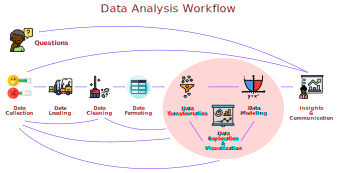

3. Data Analysis Workflow¶
Regardless of what you may have heard, there is not such a thing as well established sequence of steps to perform data analysis. Any person that has done data analysis for research or industrial applications knows that getting insights from data is a nonlinear process. True, you have to import data before plotting data, but you may find yourself reimporting more or better data after presumably completing the visualization part. The same goes for each part of the data analysis process: going back and forth between different stages as you discover great things and issues with your data is a fact of life.
What we do have in data analysis are idealized models of how the process should go. A prominent example is this scheme from Grolemud and Wickham:
Under Grolemud’s and Wickham’s scheme, you have a first linear process of importing and tidying (i.e., putting the data in tabular form), followed by a nonlinear part of transforming, visualizing, and modeling, and a final stage of communicating your results. This model is a perfectly good scheme to follow, and you can find numerous similar proposals online or in data analysis textbooks. This diversity of proposals reinforces my initial point: there is no such thing as universally accepted “right” way to do data analysis. Trial and error and flexibility are fundamental aspects of an effective data analysis process.
Proposing data analysis workflows seems to be a lot of fun, so I want to make my own too. According to my experience, this is how an idealized process may look:
Questions
Data collection
Data loading
Data cleaning
Data formating
Data transformation
Data exploration and visualization
Data modeling
Insight and communication
The graphic below illustrate my view of the data analysis process.

I’ll admit right away that my scheme is similar to Grolemud’s and Wickham’s but in all fairness, all schemes are similar to each other. However, there are a couple of differences that are important to highlight. First, I want to emphasize the nonlinearity of the data analysis process, illustrated by the arrows pointing backward in the scheme. For instance, the data cleaning process often left you with not enough quality data to do any meaningful analysis, which will lead you to collect more data. The transformation, exploration, and modeling cycle can also indicate that more cleaning and or more data is required. And the insights and communication process often works as a source for new questions. And second, the creative process of making questions and coming up with data collection procedures is also often a part of the data analysis process.
Next, I will address each of these stages with a practical example analyzing real data. Before jumping into coding, I want to briefly address the first two stages, Questions and Data collection at a conceptual level as they are processes usually done in teams and before any actual coding happens.
Questions¶
Broadly speaking, questions in data analysis have three goals: (1) to describe the data in a non-causal fashion, (2) to establish causality, (3) to generate more targeted questions by freely exploring the data. These goals match with the methods of descriptive and/or exploratory research, correlational an/or causal research, and purely exploratory research. I make the distinction between descriptive and/or exploratory research and purely exploratory, to emphasize that the former usually have well-defined questions guiding the analysis, whereas the latter is more open and inductive in terms of questions and methods, meaning that questions can become about causal relationships.
Examples of descriptive analysis questions:
What is the demographic profile of the company customers?
What is the percentage of votes that liberal candidates for congress obtained in the last election?
What are the main characteristics of the geomorphology of the south of Africa?
Which are the preferred technologies among web developers in Europe?
What are the main sources of income in the Japanese economy?
Examples of inferential analysis questions:
Do older customers have different preferences for coffee in my coffee shop?
Is infant mortality significantly higher in countries with access to universal public health?
Do gun control significantly reduces the rate of violent crimes?
Do participants in the treatment group of a COVID-19 clinical trial vaccine have a lower infection rate that participants in the control group?
Is weather significantly associated with economic growth?
Examples of purely exploratory analysis questions:
Does my data contain any meaningful clustering pattern?
Are some variables in my data associated?
How does distribution in my dataset look like?
Data collection¶
There exist a wide variety of data collection methods, and data analyst may or may not be involved in such a process. The possibilities are so vast that it makes no sense trying to catalog all of them. Data can come from telescopes, surveys, ethnographies, clinical trials, census, logs from videogames, financial transactions, etc. Instead of attempting the impossible task of enumerating all methods, I want to focus my attention on the following two questions: (1) can the analyst collect more data?, (2) does the data come from a study/experiment or it was collected “on the wild”?
Having the capacity of collecting more data can be a good or a bad thing depending on the kind of problem you are facing. In descriptive data analysis and machine learning projects, having such capacity is a good thing. From a descriptive analysis perspective, more data enables us to expand the dataset to understand things better. From a machine learning perspective, more data usually equals higher accuracy and less overfitting. Now, if your goal is hypothesis testing or causal inference, having the capacity of collecting more data after the modeling phase can be a bad thing as enables p-hacking and other bad practices in statistical inference. True, is ultimately up to the analyst to engage or not in bad practices, but the temptation is there and other members of the team that may not be aware of the risk may put pressure on the analyst.
When data are collected in a controlled situation like an experiment or a survey, the data analysis process can be carefully planned, and the question-answering process becomes easier. When data is gathered from secondary sources or “in the wild” through methods like web-scraping or utilizing someone else’s data, the data analysis becomes harder. In such a context, asking exactly the question you wanted you to ask may be hard or impossible, and a more exploratory and flexible mindset is necessary.